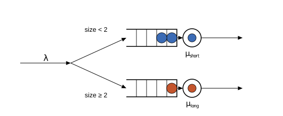

Marks: classes of jobs
So far every job has been anonymous. Real workloads are mixtures: short requests and long ones, interactive users and batch jobs, readers and writers. Concourse gives jobs identity through marks: named numbers stamped on a job when it is born, carried with it everywhere it goes.
A mark is declared at the source with a MarkLaw — one probability law per mark name. Marks then have three uses, two of which earlier pages already sneaked in:
- Ordering keys. The disciplines page sorted buffers by
Mark(:size)for priority and SRPT. - Class-dependent service. A service law can read a mark:
Law(:Dirac, value = Mark(:size))("service equals the stamped size") orLaw(:Exponential, scale = Mark(:mean_s))("exponential with a per-job mean"). - Routing. The
ByMarkkernel sends a job one way or another depending on a mark — this page's experiment.
Routing by size
A classic design question: given one stream of jobs with wildly mixed sizes and two servers, should the servers share a single line? One good answer is SITA — size-interval task assignment: dedicate one server to short jobs and the other to long jobs, so a short job never gets stuck behind a monster. In the diagram, blue jobs (short) go up, orange jobs (long) go down.

The model: each arrival is stamped with an exponential size mark (mean 1), and ByMark compares the mark against the cutoff 2.0 — below it, the job goes to :short; at or above it, to :long.
using Concourse, Statistics
net = QueueNetwork(param_names = (:lambda, :mu_short, :mu_long))
source!(net, :arrive;
interarrival = Law(:Exponential, scale = inv(Param(:lambda))),
mark = MarkLaw(size = Law(:Exponential, scale = Const(1.0))))
station!(net, :short; service = Law(:Exponential, scale = inv(Param(:mu_short))))
station!(net, :long; service = Law(:Exponential, scale = inv(Param(:mu_long))))
sink!(net, :done)
route!(net, :arrive, ByMark(Mark(:size), [2.0], [:short, :long]))
route!(net, :short, Always(:done))
route!(net, :long, Always(:done))
m = compile(net)
θ = [1.0, 2.0, 1.0] # lambda, mu_short, mu_longMarks live in the record
The first page said the record is the complete output of a simulation. Marks keep that promise: every mark draw is written into the record next to the event that consumed it. Print the first few events:
rec = simulate(m, θ, 8.0; seed = 5)
for i in 1:min(7, length(rec))
println(rpad(round(rec.time[i], digits = 3), 8), rpad(rec.key[i], 22),
isempty(rec.draws[i]) ? "(no draws)" : rec.draws[i])
end2.504 (:arrival, 1, 0) [:size => 1.119429311702644]
2.602 (:service, 2, 1) (no draws)
2.834 (:arrival, 1, 0) [:size => 0.40963130943168075]
3.239 (:service, 2, 2) (no draws)
3.666 (:arrival, 1, 0) [:size => 1.8205496861567916]
5.142 (:service, 2, 3) (no draws)
6.338 (:arrival, 1, 0) [:size => 0.21321415074824324]Each arrival carries its :size draw; service completions consumed no draws. Because the stamped sizes are in the record, replaying a run reproduces every routing decision exactly — replay never re-rolls the dice. (This is the foundation the Manual builds on.)
The check: thinning
Splitting a Poisson stream by an independent per-job test leaves each branch Poisson (the same thinning argument as the probabilistic split). A size mark below the cutoff happens with probability $p = P(\text{size} < 2) = 1 - e^{-2} \approx 0.865$, so:
:shortis an M/M/1 queue with $\lambda_s = p\lambda$ and $\mu_s = 2$,:longis an M/M/1 queue with $\lambda_l = (1-p)\lambda$ and $\mu_l = 1$,
and each branch must obey its own $L = \rho/(1-\rho)$ — computed here against measured per-station occupancy:
function replicate(f, m, θ, horizon, nreps; seed0 = 1000)
vals = [f(simulate(m, θ, horizon; seed = seed0 + r)) for r in 1:nreps]
mean(vals), std(vals) / sqrt(nreps)
end
at(m, name) = (q = m.names[name]; st -> Float64(length(st.buf[q]) + length(st.srv[q])))
p = 1 - exp(-2.0)
for (name, λx, μx) in [(:short, p * θ[1], θ[2]), (:long, (1 - p) * θ[1], θ[3])]
ρ = λx / μx
est, se = replicate(r -> time_average(at(m, name), m, r), m, θ, 2000.0, 16)
println(rpad(name, 7), "measured L = ", round(est, digits = 3), " ± ",
round(se, digits = 3), " theory ", round(ρ / (1 - ρ), digits = 3))
endshort measured L = 0.759 ± 0.017 theory 0.762
long measured L = 0.155 ± 0.004 theory 0.157Both stations match their closed forms. Note what was checked: a derived property (thinning) of a composite mechanism (mark draw, ByMark kernel, two stations), against formulas that never mention marks at all.
Redrawing marks en route
A mark is stamped at birth, but some models want a fresh value at each visit: a request that arrives at its next station with a new size, a re-entrant flow whose every pass draws its own work. The remark keyword of station! declares laws that are redrawn when a job is deposited into the station from outside — same names replace the job's marks, new names extend them:
station!(net, :hop2;
service = Law(:Dirac, value = Mark(:size)),
remark = (size = Law(:Exponential, scale = Const(0.25)),))The redraw happens before anything at the station reads marks, so an ordered discipline files the job by its new values and the service law sees them. Three conventions:
- Pre-redraw reads. Every remark law is evaluated against the job's marks before the redraw, and only then do the drawn values merge — so
remark = (a = Law(:Dirac, value = Mark(:b)), b = Law(:Dirac, value = Mark(:a)))swapsaandb. - Once per deposit from outside. Moves within the station — a preempted job returning to the buffer, a blocked transfer finally admitted — redraw nothing; the blocked transfer drew at the deposit that blocked it.
- Recorded like any mark. Remark draws ride the depositing firing's draw list in the record, so replay reproduces them, and the compile-time census knows where they exist: a law may read a remark-only mark at the remark station or downstream of it, never upstream, and a remark law may not read station state (check C11).
Two exponential hops where the second redraws size, as above, is the sharpest self-check: each hop is an M/M/1 on its own size moments, and the tandem matches both closed forms only if the redraw really replaced the mark at the second hop.
Where this leads
Marks are the whole multi-class apparatus in one primitive. Stamp a class mark and per-class service scales, let laws read the marks, and you have a multi-class queueing network; add processor sharing from the M/G/1 page and probabilistic routing from the networks page, and you have everything the celebrated BCMP theorem needs. The BCMP case study in the Manual assembles exactly those pieces into a model of a high-performance computing cluster and checks the whole network — every station, both classes — against the product-form theory.